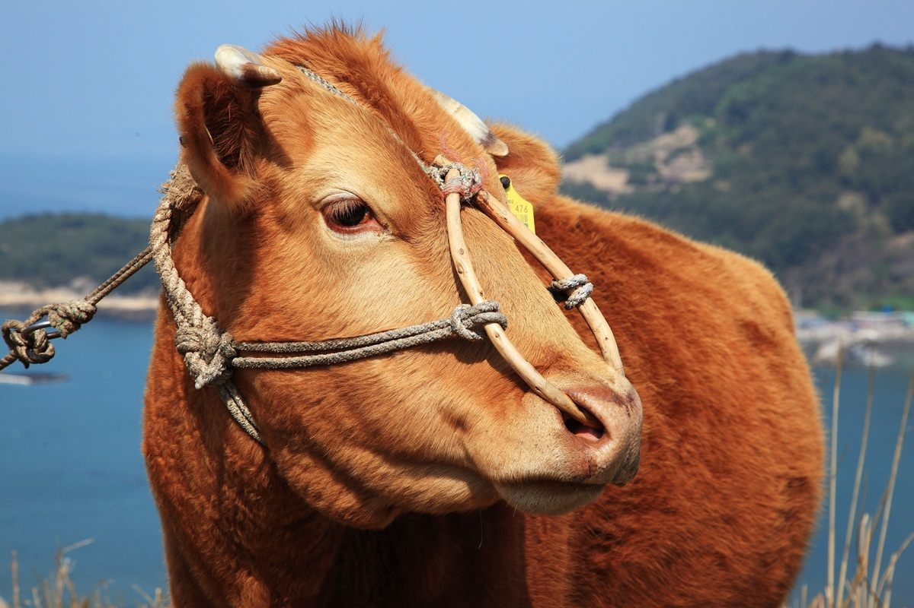

최대 40% 할인 「강원 한우데이」… 19일부터 사흘간
강원도가 한우를 최대 40% 할인하는 '강원 한우데이'를 19일부터 사흘간 연다고 경향신문이 전했다.
이문창 기자 · 2026.06.18
橋사회·한국

경향신문은 강원도가 6월 19일부터 사흘간 한우를 최대 40% 할인 판매하는 '강원 한우데이' 행사를 개최한다고 보도했다. 한우 소비를 촉진하고 축산 농가를 돕기 위한 지역 행사로, 소비자에게는 합리적 가격에 한우를 구입할 기회다.
광고 문의 · 300×250축산물 할인 행사는 생산자와 소비자를 동시에 돕는 상생형 정책이다. 사료비 상승 등으로 어려움을 겪는 축산 농가에는 판로를, 물가 부담을 느끼는 소비자에게는 가격 혜택을 제공한다.
한우는 한국의 대표적 축산물로, 명절·행사철 수요가 크다. 산지 직거래나 지자체 할인 행사를 활용하면 가계의 식비 부담을 다소 덜 수 있다.
華橋時報는 생활 물가·소비 정보를 재한 화인 가정의 실용 정보로 전한다. 지역 할인 행사를 잘 챙기는 것은 알뜰한 생활의 한 방법이다.
출처·참고 (사실 확인용 — 본문은 직접 재작성)
· 경향신문
· 경향신문